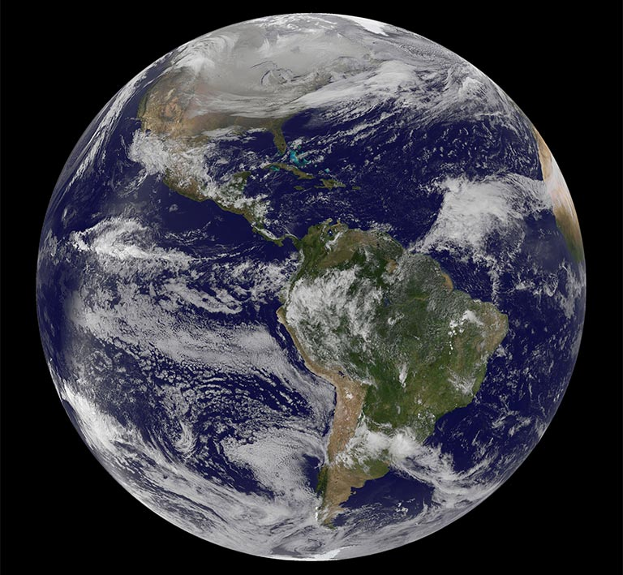

Planet Earth
Our Home
Our only home.

What Is Earth?
Earth Facts
- Earth has never been perfectly round. The planet bulges around the equator by an extra 0.3 percent as a result of the fact that it rotates about its axis. Earth's diameter from North to South Pole is 12,714 kilometers (7,900 miles), while through the equator it is 12,756 kilometers (7,926 miles). The difference — 42.78 kilometers (26.58 miles) — is about 1/300th the diameter of Earth. This variation is too tiny to be seen in pictures of Earth from space, so the planet appears round to the human eye. Recent research from NASA's Jet Propulsion Laboratory suggests that melting glaciers are causing Earth's waistline to spread.
- The length of Earth's day is increasing. When Earth was formed 4.6 billion years ago, its day would have been roughly six hours long. By 620 million years ago, this had increased to 21.9 hours. Today, the average day is 24 hours long, but is increasing by about 1.7 milliseconds every century. The reason? The moon is slowing down Earth's rotation through the tides that it helps create. Earth's spin causes the position of its tidal ocean bulges to be pulled slightly ahead of the moon-Earth axis, which creates a twisting force that slows down Earth's rotation. As a result, our day is getting longer — but not long enough to make a difference to your busy schedule.
- If Earth were a perfect sphere, its gravitational field would be the same everywhere. But in reality, the planet's surface is bumpy, and water flow, ice drift and the movement of the tectonic plates beneath Earth's crust all change the pull of gravity. These variations are known as gravity anomalies. A mountain range such as the Himalayas causes a positive gravity anomaly — gravity is stronger there than it would be on a featureless perfectly smooth planet. Conversely, the presence of ocean trenches, or dips in the land caused by glaciers millennia ago, leads to negative gravity anomalies. NASA's GRACE (Gravity Recovery and Climate Experiment) mission, orbiting above us, is mapping Earth's gravitational field in unprecedented detail.
'For more Earth facts'
How we can help keep Earth clean
- Bring a bag. Remember to bring reusable bags to the grocery store or for any other shopping activities to reduce consumption of disposable bags.
- Invest in a reusable water bottle. Acquiring a reusable water bottle would not only greatly reduce the amount of single-use plastic you use, but it would also save you money in the long run! If you’re concerned about the quality of your tap water, consider using a water filter.
- Refuse single-use items. Take note on how often you rely on single-use items and choose to replace them with more sustainable versions. Refusing plastic straws and disposable cutlery when you go out and bringing your own containers for leftovers are a few ways you can start today.
'For more ways to keep our Earth clean'
Let's take care of our beautiful home.